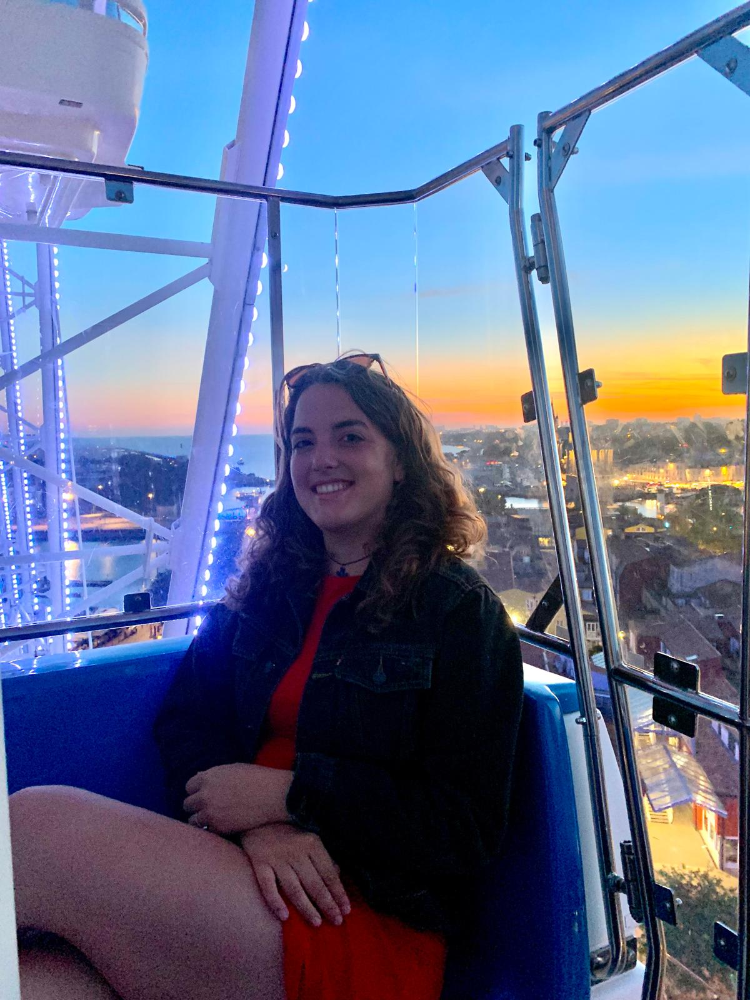
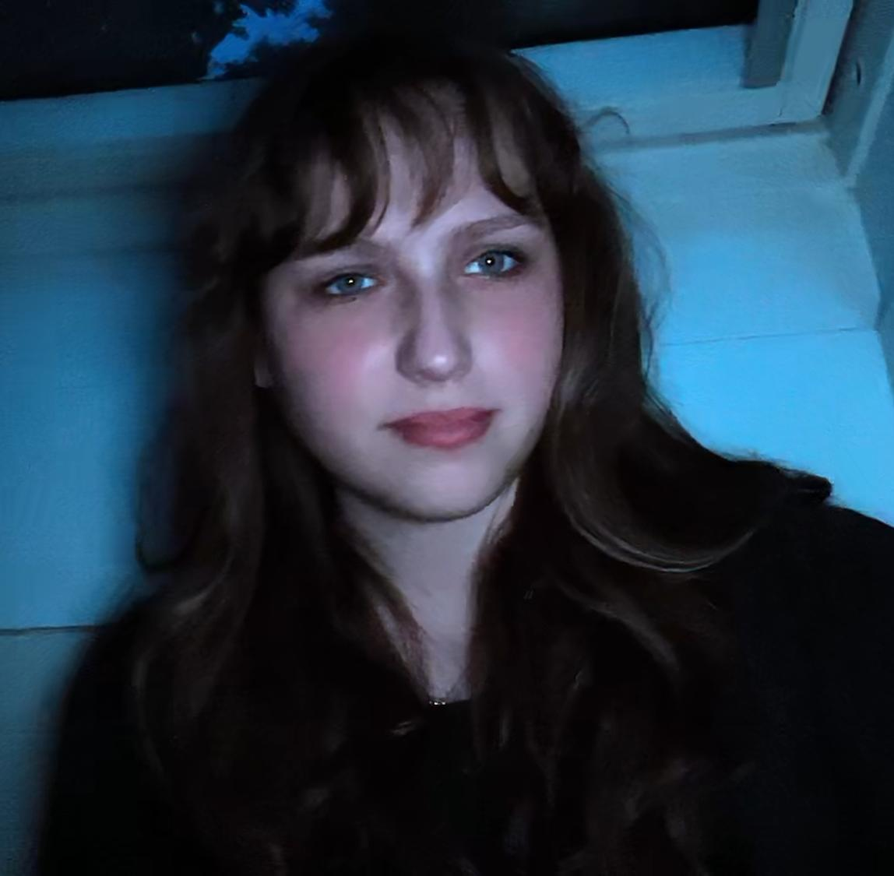
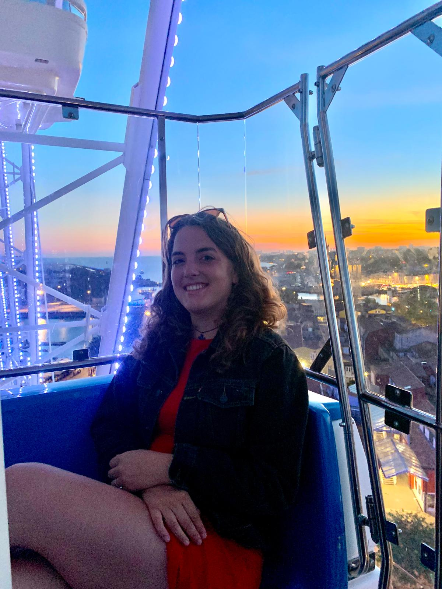
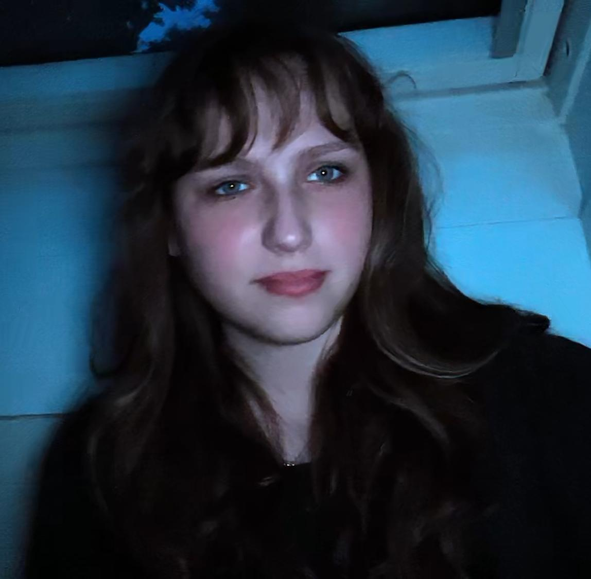

Over ons
Wij zijn vier klasgenoten die een gedeelde passie hebben voor true crime – en met name voor de verhalen die vaak in de schaduw blijven. Wat begon als een nieuwsgierigheid naar mysterieuze en onopgeloste misdrijven, is uitgegroeid tot een platform waar we niet alleen verhalen delen, maar ook proberen het bewustzijn te vergroten voor de zaken die nog steeds wachten op antwoorden.
 

Met elke aflevering hopen we jouw interesse te wekken voor de onopgeloste moordzaken die vaak uit de publieke belangstelling verdwijnen. We willen je meenemen op een reis door de meest intrigerende en tragische mysteries die de samenleving in zijn greep houden. Of het nu gaat om zaken waar weinig bekend is of verhalen die al jaren onopgelost zijn, wij geloven dat elke zaak het verdient om opnieuw onder de aandacht te komen.
Ons doel? Mensen bereiken die mogelijk meer weten, getuigen zijn geweest, of zelfs kleine aanwijzingen hebben die ons kunnen helpen de waarheid te achterhalen. Want wie weet? Misschien heb jij wel dat ene stukje informatie dat alles kan veranderen.
Door deze zaken opnieuw te bespreken, hopen we niet alleen te helpen in de zoektocht naar antwoorden, maar ook een community van luisteraars te creëren die samen met ons de mysteries van true crime willen ontrafelen. Dus blijf luisteren, duik dieper in de verhalen en wie weet, misschien help jij wel mee om een zaak op te lossen.